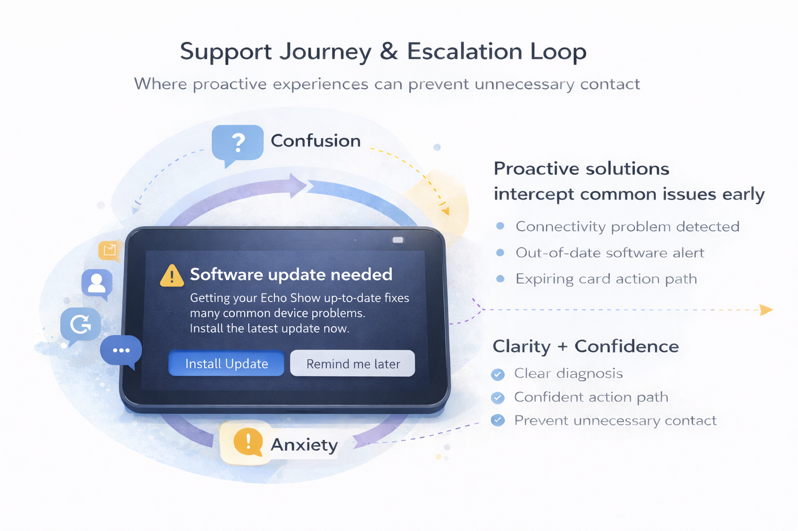

Case Study
AI-Powered Support & Conversational UX (Amazon)
Designing AI-driven customer support across chat, voice, devices, and notifications—focused on reducing customer effort, improving self-service success, and scaling trusted interaction patterns.
Problem
Customers typically contact support during moments of confusion, urgency, or frustration—investigating unfamiliar charges, managing subscriptions, resolving device issues, or navigating delivery disruptions. These are high cognitive-load scenarios where unclear paths drive escalation.

My role
I served as a staff-level IC designer leading interaction and conversation design across multiple high-volume customer service programs. My focus was building scalable patterns that preserve trust while improving automation.
- Owned: end-to-end conversational UX design: interaction patterns, failure handling, recovery flows, and design–engineering iteration.
- Designed across: chat, voice, multimodal device UIs, and notifications.
- Delivered: prototypes, flow maps, scenario models, and future-vision concepts for alignment.
- Partnered with: product, engineering, research, applied science, and policy/compliance stakeholders.
What I did
I designed conversational UX patterns focused on human–AI collaboration. I mapped user intent, system state, and failure modes, then prototyped flows that balanced automation with transparency, recovery, and human handoff. I worked in tight partnership with product, engineering, and applied science to iterate quickly based on real usage.
Outcome
The work improved clarity and task success in AI-assisted support while increasing user confidence. The resulting patterns became reusable foundations for handling ambiguity, escalation, and recovery across AI support experiences.
Design strategy
I defined and designed AI-led experiences that translate system complexity into clear, confidence-building next steps. Across programs, the work centered on making the system’s understanding visible, offering safe and reversible actions, and using proactive signals to prevent avoidable contact before frustration escalated.
- Action-forward guidance: clear “next best actions” rather than vague explanations.
- State design: modeled resolution states, uncertainty, and recovery paths for chat + voice.
- Trust signals: calm tone, verification moments, and clear escalation options.
- Scalable patterns: reusable interaction models across chat, voice, and device UI.
Workstreams
1) AI customer service chatbots
Defined and designed AI chatbot experiences for high-frequency needs like subscription management and unknown charges. The primary design focus was reducing friction, building confidence, and translating account signals into understandable options.
- Subscriptions: cancel, update, or modify subscriptions across multiple Amazon services.
- Unknown charges: guided investigation, clear explanations, reassurance, and escalation paths.
- UX themes: explainability, safe defaults, and error recovery.
2) Proactive, multimodal self-service
Designed experiences that proactively surface and resolve common issues before customers contact support. These patterns helped customers identify likely causes (connectivity, updates, performance) and resolve them with minimal effort.
- Proactive detection and guided troubleshooting to reduce “search and guess” behavior.
- Multimodal layouts that pair clear explanations with one-tap actions.
- Designed to prevent avoidable contact and reduce time-to-resolution.

3) Service continuity & proactive notifications
Designed proactive experiences that reduce uncertainty-driven contact—such as alerts for expiring payment methods, delivery disruptions (including weather-related delays), and account issues customers can resolve immediately.
- Payment readiness: alerts for expiring cards to avoid subscription interruptions.
- Delivery expectations: clear timelines, calm tone, and next steps when disruptions occur.
- Design focus: early signal + immediate, reversible actions.
4) Cross-device conversational continuity
Designed patterns that allow customers to continue support across devices—preserving context, intent, and progress so customers don’t have to repeat themselves. When a task benefits from visuals or deeper account detail, the system supports a seamless handoff.
- Conversation state design to support resumable flows and handoffs.
- Repair strategies for ambiguity and partial input in voice contexts.
- Multimodal escalation when visual confirmation improves trust and success.
Design principles
- Reduce cognitive load: translate complexity into human language.
- Design for ambiguity: safe defaults and clear recovery paths.
- Make intent visible: what the system is doing and why.
- Preserve control: automation with transparency and easy override.
- Scale patterns: reusable models across chat, voice, and device UIs.
Outcomes
Detailed metrics and many artifacts are confidential, but these initiatives contributed to clearer AI-led resolution paths, stronger trust signals in automated support, and reusable interaction models across chat, voice, notifications, and device surfaces.
- Significantly reduced manual handling of contacts related to unknown charges.
- Decreased resolution time of routine charge clarification requests.
- Freed associate capacity to focus on more complex customer issues.
Confidentiality note: Visual designs, detailed flows, and metrics for these initiatives are not public. This page describes the scope and design approach without sharing confidential artifacts.